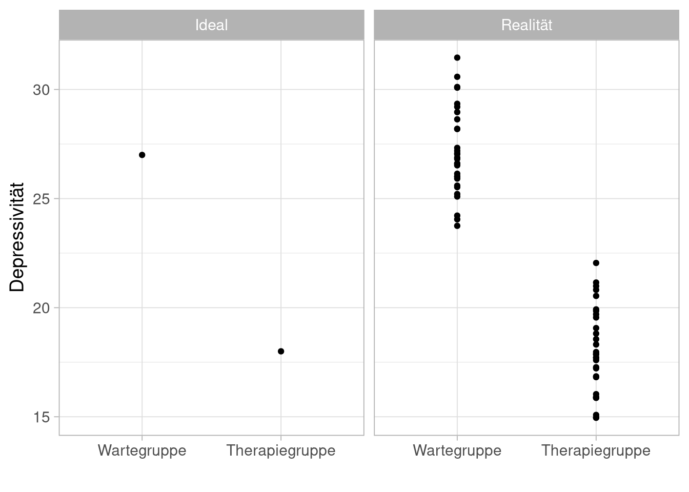

Störvariablen
Organisatorisches
Semesterplan
| Sitzung | Datum | Sitzungstitel |
|---|---|---|
| 1 | 02.11.2020 | Warum wissenschaftliche Psychologie |
| 2 | 28.11.2020 29.11.2020 | Hypothesen und der Prozess der Hypothesenprüfung |
| 3 | 28.11.2020 29.11.2020 | Experimentelles Vorgehen |
| 4 | 28.11.2020 29.11.2020 | Literaturrecherche |
| 5 | 28.11.2020 29.11.2020 | Operationalisieren und Messen |
| 6 | 12.12.2020 13.12.2020 | Experimentelle Versuchspläne |
| 7 | 12.12.2020 13.12.2020 | Störvariablen im Experiment |
| 8 | 12.12.2020 13.12.2020 | Nicht-experimentelle Versuchspläne |
| 9 | 12.12.2020 13.12.2020 | Material und Stichprobe |
| 10 | 23.1.2021 24.1.2021 | Auswertung, Darstellung und Interpretation |
| 11 | 23.1.2021 24.1.2021 | Ethische Probleme im Versuch |
| 12 | 23.1.2021 24.1.2021 | Publikationsprozess |
| 13 | wird noch bekannt gegeben | Vorstellung der Gruppenarbeiten |
| 14 | wird noch bekannt gegeben | Klausurvorbereitung |
Wiederholung
Mehrfaktorielle Versuchspläne
| UV B | ||||
| Stufe b1 | Stufe b2 | Stufe b3 | ||
| UV A | Stufe a1 | AV1.a1b1 | AV1.a1b2 | AV1.a1b3 |
| Stufe a2 | AV1.a2b1 | AV1.a2b2 | AV1.a2b3 | |
| Substanz | ||||
| Cannabis | Koffein | Alkohol | ||
| Ausnüchterung | keine | d2 | d2 | d2 |
| Ohrfeige | d2 | d2 | d2 | |
Varianz - Freund und Feind
Varianz der abhängigen Variable
Sehr wenig Varianz
Graue Flecken an den Kreuzungen
Sehr viel Varianz
Die Attraktivität dieses Mannes

Varianzanteile

Beispiel: Evaluation einer neuen Therapie für Depression
Wir überprüfen die Wirkung einer neuen Therapie
Unabhängige Variable: Interventionsform (Warten vs. Therapie)
Abhängige Variable: Wert im Depressionsfragebogen nach 5 Wochen

Störvariablen
Konfundierung
Konfundierung: Kovariieren die Stufen einer UV und die Ausprägungen einer Störvariable, so ist die UV mit der SV konfundiert. Die Wirkung der UV kann dann nicht mehr getrennt von der Wirkung der SV gemessen werden.
Lässt sich eine Konfundierung nicht vermeiden, kann das Experiment nicht durchgeführt werden, bzw. hat eine reduzierte Aussagekraft (je nach Schwere der Konfundierung).
Wird eine Konfundierung im nachhinein entdeckt, so ist das Experiment unbrauchbar, bzw. kann nicht mehr im ursprünglichen Sinne interpretiert werden.
Arten von Störvariablen
Variablen der Vp (Organismusvariablen)
- Alter, Geschlecht, Extraversion, Intelligenz, Schulbildung, Vorerfahrungen mit psychologischen Untersuchungen oder mit verwendetem Testmaterial, etc.
Kontrolle von Störvariablen der VPn
Parallelisieren:
- Störvariable ist im Mittel in allen Gruppen unter allen Bedingungen gleich ausgeprägt
Matching:
- In jede Gruppe / Bedingung wird einer von zwei Matchingpartnern gelost, der die gleichen Ausprägungen der Störvariablen hat
Randomisieren:
- Bei großen Gruppen geht man davon aus, dass bei zufälliger Verteilung der Personen auf Gruppen, Bedingungen die Störvariablen im Mittel gleich ausgeprägt sind
Abhängige Desings
- Abhängige UVs stellen eine sehr starke Art der Kontrolle von aus dem Organismus resultierenden Störvariablen dar
Störvariablen in abhängigen Designs
Positionseffekte
Ermüdungseffekte
Test-Effekte
Spontanheilung
…
Carry-Over-Effekte
- Reaktivitäts-Effekte - ...
(un-)vollständiges Ausbalancieren
- funktioniert natürlich nicht bei Carry-Over-Effekten
Eliminieren der Störvariable
Wechsel in unabhängiges Design
Arten von Störvariablen
Variablen der Untersuchungssituation
Versuchsleiter (VL): Geschlecht, Aussehen, Freundlichkeit, etc.
Untersuchungsraum: Lichtverhältnisse, Lärmbelastung, Einrichtung, Größe, Farbwahl, etc.
Instruktionen: Sprache, sprachliches Niveau, spezielle Formulierungen, etc.
Testaufgaben: bestimmte Eigenschaften
Fragen: Reihenfolge, Formulierungen, etc. etc.
Kontrolle von Störvariablen der Untersuchungssituation
Elimination:
- Störvariable völlig ausschalten
Konstanthalten:
- Störvariable für Dauer des Versuches Konstant halten
- Vorsicht: Generalisierbarkeit evtl. eingeschränkt
Zufallsvariation:
- Zufällige Zuteilung der Versuchsbedingungen auf ‘Störvariablen-Stufen’
Einführung einer Kontrollgruppe:
- Kontrolle von Veränderungen über die Zeit
- Kontrolle von reaktiven Effekten der Vorhermessung
Arten von Störvariablen
Variablen der sozialen (Untersuchungs-)Situation
Versuchsleiter (VL): Organismusvariablen und Verhalten, Erwartungen.
Versuchsperson (Vp): z.B. Erwartungen, Motivation Versuchssituation: Umgebung, andere Vpn…
Kontrolle von Störvariablen
Erwartungseffekte
Rosenthal-Effekt
Placebo-Effekt
Aufforderungsvariablen
Soziale Erwünschtheit
Übung
Erwartungseffekte
Nocebo-Effekt
Versagensangst
Andorra-Effekt
Hawthorne-Effekt
Kontrolle von Störvariablen des VL
Standardisierung der Versuchsbedingungen:
- festgelegte Abläufe und Verhaltensweisen verringern den Spielraum für Ausdruck von Erwartungen durch den VL
Ausschalten des VL:
- Verringerung des persönlichen Kontakts in kritischen Phasen des Experiments
Training des VL:
- Insbesondere Standardisierung von non-verbalem Ausdruck
Manipulation der Erwartungen des VL:
- bei mehreren VLn, kann die Erwartung des VL systematisch variiert und untersucht werden
VL-Blindversuch und Doppelblindversuch:
- kennt der VL die aktuelle Versuchsbedingung nicht, können seine Erwartungen nicht systematisch wirksam werden